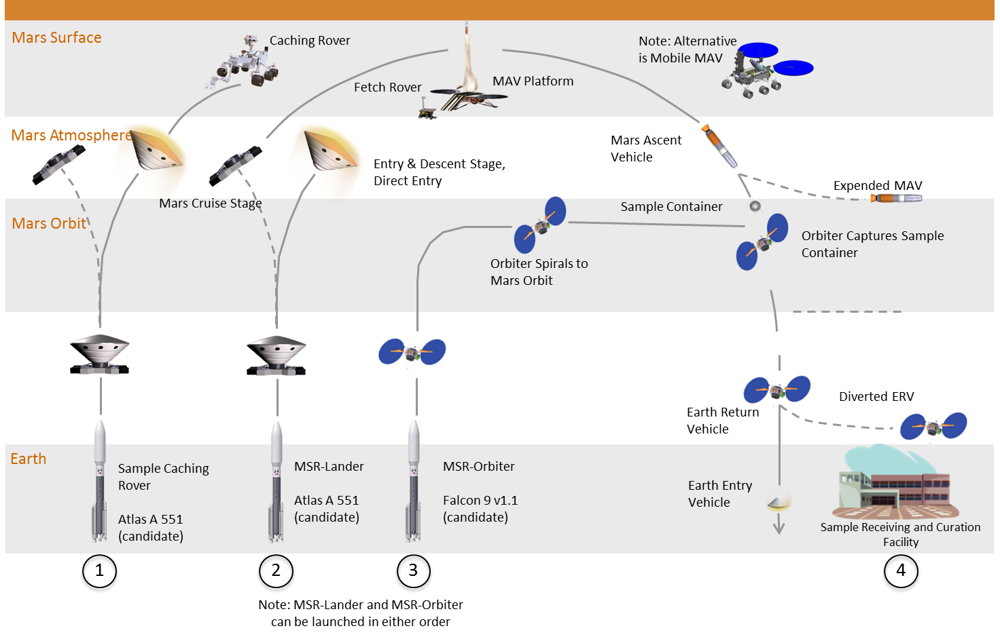

6 Sentences
\(\DeclarePairedDelimiter{\set}{\{}{\}}\)
We have seen that an inference involves, at the very least, two things: the object of the inference (proposal), and the data, information, or hypotheses on which the inference is based (conditional).
We also observed that wildly different “things” can be the object of an inference or the information on which the inference is based: measurement results, decision outcomes, hypotheses, not-real events, assumptions, data and information of all kinds (for example, images). In fact, such variety in some cases can make it difficult to pinpoint what an inference is about or what it is based upon.
Is there a general, flexible, yet precise way of representing all these kinds of “things”?
6.1 The central components of knowledge representation
When speaking of “data”, what comes to mind to many people is numbers or collections of numbers. Maybe numbers, then, could be used to represent all the variety of “things” exemplified above? Well, this option turns out to be too restrictive.
I give you this number: “\(8\)”, saying that it is “data”. But what is it about? You, as an agent, can hardly call this number a piece of information, because you have no clue what to do with it.
Instead, if I tell you: “The number of official planets in the solar system is 8”, then we can say that I’ve given you data. You can do different things with this piece of information. For instance, if you had decided to send one probe to each official planet, now you know you have to build eight probes. Or maybe you can win at a pub quiz with it.
“Data” is therefore not just numbers. A number is not “data” unless there’s an additional verbal and non-numeric context accompanying it – even if only implicitly. Sure, we could represent this meta-data information as numbers too; but this move would only shift the problem one level up: we would need an auxiliary verbal context explaining what the meta-data numbers are about.
Data can, moreover, be completely non-numeric. A clinician saying “The patient has fully recovered from the disease” is giving us a piece of information that we could further use, for instance, to make prognoses about other, similar patients. The clinician’s statement surely is “data”, but is essentially non-numeric data. Sure, in some situations we could represent this data with numbers, say “1” for “recovered” and “0” for “not recovered”. But the opposite or some other convention could also be used: “0” for “recovered” and “1” for “not recovered”, or the numbers “0.3” and “174”. These numbers have intrinsically nothing to do with the clinician’s “recovery” data.
The examples above, however, actually reveal the answer to our needs! In the examples we expressed the data by means of sentences. Clearly any measurement result, decision outcome, hypothesis, not-real event, assumption, data, and any piece of information can be expressed by a sentence.
We shall therefore use sentences, also called propositions or statements,1 to represent and communicate all the kinds of “things” that can be the proposal or the conditional of an inference. In some cases we can of course summarize a sentence by a number, as a shorthand, when the full meaning of the sentence is understood.
1 These three terms are not always equivalent in formal logic, but here we’ll use them as synonyms.
Sentences are the central components of knowledge representation in AI agents. For example they appear at the heart of automated control programs and fault-management systems in NASA spacecrafts – we’ll return to these later on.
6.2 Identifying and working with sentences
But what is a sentence, more exactly? The everyday meaning of this word will work for us, even though there are more precise definitions – and still a lot of research in logic an artificial intelligence on how to define and use sentences. We shall adopt this useful definition:
A sentence is something for which an agent can determine, at least in principle, whether it is true or false.
Let’s make this definition clearer with some remarks:
A sentence doesn’t have to contain only words. It can contain pictures, sounds, and other non-verbal items. For example, the following:
“This:
 is an animated picture of Saitama.”
is an animated picture of Saitama.”is a sentence, even if it contains animated graphics, because we can say that it is
true. Likewise, the following:“This link leads to a song by Pink Floyd.”
is also a sentence, even if it contains links and audio, because we can say that it is
false(that’s a song by Monty Python).A meaningful phrase may not be a sentence. For instance, a phrase like “Apples are much tastier than pears” may not be a sentence, because it’s a matter of personal taste whether it’s
trueorfalse. Moreover, an agent’s opinion about apples and pears might change from time to time.The phrase “Jenny right now finds apples tastier than pears”, on the other hand, could be a sentence; its truth being found by asking Jenny at that very moment.
In an engineering context, the phrase “This valve will operate for at least two months” is a sentence, even if its truth is unknown at the moment: one has to wait two months, and then its truth will be unambiguously known.
An expression involving technical terms may not be a sentence (and not meaningful either). For instance, in a data-science context the phrase “This neural-network algorithm has better performance than that random-forest one” is not a sentence unless we have objectively specified what “better” means (higher accuracy? higher true-positive rate? faster?), for example by adopting a particular comparison metric.
Some expressions involving technical terms may appear to be sentences at first; but a deeper analysis then reveals that they are not. A famous example is the sentence “The two events (at different spatial locations) are simultaneous”. Einstein showed that there’s no physical way to determine whether such an expression is true or false. Its truth turns out to be a matter of convention. The Theory of Relativity was born from this observation.
- A sentence can be expressed in different ways by different phrases and in different languages. For instance, “The temperature is 248.15 K”, “Temperaturen ligger på minus 25 grader”, and “25 °C is the value of the temperature” all represent the same sentence.
There are many advantages in working with sentences (rather than just numbers), and in keeping in mind that every inference is about sentences:
First, this point of view leads to clarity in engineering problems, and makes them more goal-oriented. A data engineer must acquire information and convey information. “Acquiring information” does not simply consist in making measurements or counting something: the engineer must understand what is being measured and why. If data is gathered from third parties, the engineer must ask what exactly the data mean and how they were acquired. In designing a solution, it is important to understand what information or outcomes the end user exactly wants. These “what”, “why”, “how” are expressed by sentences. A data engineer will often ask “wait, what do you mean by that?”. This question is not just an unofficial parenthesis in the official data-transfer workflow between the engineer and someone else. It is an integral part of that workflow: it means that some information has not been completely transferred yet.
Second, this point of view is extremely important in AI and machine-learning design. A (human) engineer may proceed informally when drawing inferences, without worrying about “sentences” unless a need for disambiguation arises. A data engineer who’s designing or programming an algorithm that will do inferences automatically, must instead be unambiguous and cover beforehand all possible cases that the algorithm will face.
We therefore agree that the proposal and the conditional of an inference have to be sentences. This means that the proposal of the inference must be something that can be true or false.
Many inferences, especially when they concern numerical measurements, involve more than one sentence. For example, an inference about the result of rolling a die actually consists of the probabilities for six separate proposals:
\[ \begin{aligned} &\textsf{\small`The result of the roll is 1'} \\ &\textsf{\small`The result of the roll is 2'} \\ &\dotso \\ &\textsf{\small`The result of the roll is 6'} \end{aligned} \]
Later on we shall see how to work with more complex inferences of this kind. In real applications it can be useful, on some occasions, to pause and reduce an inference to its basic set of true/false sentences. This analysis may reveal contradictions in our inference problem. A simple way to do this is to reduce the complex inference into a set of yes/no questions.
This kind of analysis is also important in information-theoretic situations: the information content provided by an inference, when measured in Shannons, is related to the minimal amount of yes/no questions that the inference answers.
6.3 Notation and abbreviations
Writing full sentences would take up a lot of space. Even an expression such as “The speed is 10 m/s” is not a sentence, strictly speaking, because it leaves unspecified the speed of what, when it was measured and in which frame of reference, what we mean by “speed”, how the unit “m/s” is defined, and so on.
Typically we leave the full content of a sentence to be understood from the context, and we denote the sentence by a simple expression. Example:
\[ \textsf{\small The speed is 10\,m/s} \]
or even more compactly introducing physical symbols:
\[ v \mathclose{}\mathord{\nonscript\mkern 0mu\textrm{\small=}\nonscript\mkern 0mu}\mathopen{}10\,\mathrm{m/s} \]
where \(v\) is a physical variable denoting the speed. Sometimes we may simply write
\[ 10\,\mathrm{m/s} \]
In some problems it’s useful to introduce symbols to denote sentences. As mentioned before, in these notes we’ll use sans-serif italic letters: \(\mathsfit{A},\mathsfit{B},\mathsfit{a},\mathsfit{b},\dotsc\), possibly with sub- or super-scripts. For instance, the sentence “The speed is 10 m/s” could be denoted by the symbol \(\mathsfit{S}_{10}\). We express such a definition like this:
\[ \mathsfit{S}_{10} \coloneqq\textsf{\small`The speed is 10\,m/s'} \]
which means that the symbol \(\mathsfit{S}_{10}\) is defined to be the sentence \(\textsf{\small`The speed is 10\,m/s'}\).
6.4 Connecting sentences
Atomic sentences
In analysing the measurement results, decision outcomes, hypotheses, assumptions, data and information that enter into an inference problem, it is convenient to find a collection of basic sentences or, using a more technical term, atomic sentences, out of which all other sentences of interest can be constructed. These atomic sentences often represent elementary pieces of information in the problem.
Consider for instance the following composite sentence, which could appear in our assembly-line scenario:
“The electronic component is still whole after the shock test and the subsequent heating test. The voltage reported in the final power test is either 90 mV or 110 mV.”
In this statement we can identify at least four atomic sentences, which we denote by these symbols:
\[\begin{aligned} \mathsfit{s} &\coloneqq\textsf{\small`The component is whole after the shock test'} \\ \mathsfit{h} &\coloneqq\textsf{\small`The component is whole after the heating test'} \\ \mathsfit{v}_{90} &\coloneqq\textsf{\small`The power-test voltage reading is 90\,mV'} \\ \mathsfit{v}_{110} &\coloneqq\textsf{\small`The power-test voltage reading is 110\,mV'} \end{aligned} \]
The inference may actually require additional atomic sentences. For example it might become necessary to consider atomic sentences with other values for the reported voltage, such as
\[\begin{aligned} \mathsfit{v}_{110} &\coloneqq\textsf{\small`The power-test voltage reading is 100\,mV'} \\ \mathsfit{v}_{80} &\coloneqq\textsf{\small`The power-test voltage reading is 80\,mV'} \end{aligned}\]
and so on.
Connectives
How do we construct composite sentences, like the one above, out of atomic sentences?
We consider three ways: one operation to change a sentence into another related to it, and two operations to combine two or more sentences together. These operations are called connectives. You may have already encountered them in Boolean algebra. Our natural language offers many more operations to combine sentences, but these three connectives turn out to be all we need in virtually all engineering and data-science problems:
These connectives can be applied multiple times, to form increasingly more complex composite sentences.
The and connective appears very frequently in probability formulae. Using its standard symbol “\(\land\)” would consume a lot of horizontal space. For this reason a comma “\(\mathbin{\mkern-0.5mu,\mkern-0.5mu}\)” is often used as an alternative symbol. So the expressions \(\mathsfit{s} \land \mathsfit{h}\) and \(\mathsfit{s} \mathbin{\mkern-0.5mu,\mkern-0.5mu}\mathsfit{h}\) are completely equivalent.
From the last remark we see that the sentence
\[ \textsf{\small`The power-test voltage reading is 90\,mV or 110\,mV'} \]
does not correspond to \(\mathsfit{v}_{90} \lor \mathsfit{v}_{110}\) . It is implicitly understood that a voltage reading cannot yield two different values at the same time. Convince yourself that the correct way to write that sentence is this:
\[ (\mathsfit{v}_{90} \lor \mathsfit{v}_{110}) \land \lnot(\mathsfit{v}_{90} \land \mathsfit{v}_{110}) \]
Finally, the full composite sentence of the present example can be written in symbols as follows:
“The electronic component is still whole after the shock test and the subsequent heating test. The voltage reported in the final power test is either 90 mV or 110 mV.”
\[ \textcolor[RGB]{102,204,238}{\mathsfit{s}} \land \textcolor[RGB]{34,136,51}{\mathsfit{h}} \land (\textcolor[RGB]{238,102,119}{\mathsfit{v}_{90}} \lor \textcolor[RGB]{170,51,119}{\mathsfit{v}_{110}}) \land \lnot (\textcolor[RGB]{238,102,119}{\mathsfit{v}_{90}} \land \textcolor[RGB]{170,51,119}{\mathsfit{v}_{110}}) \]
6.5 “If… then…”
Sentences expressing data and information in natural language also appear connected with if… then…. For instance: “If the voltage reading is 200 mV, then the component is defective”. This kind of expression actually indicates that the following inference
\[ \textsf{\small`The component is defective'} \pmb{\nonscript\:\big\vert\nonscript\:\mathopen{}} \textsf{\small`The voltage reading is 200\,mV'} \]
is true.
This kind of information is very important because it is often the starting point of our inferences. We shall discuss this point in more detail in the next sections.
6.6 Actual implementation
As we said at the beginning, sentences are the central components of knowledge representation in AI agents. But how are sentences and their relationships actually implemented in a concrete AI agent?
The notation and symbols we discussed above are tools that we, humans, use to study and discuss about sentences. These symbols and tools are independent of technology; there also lies their usefulness. But we cannot expect a concrete AI agent to work with “letters” or similar symbols internally.
Knowledge representation is a whole AI field in itself, and unfortunately we don’t have time to delve into its present-day state and concrete implementations. Also because, remember, we’re trying to adopt a view that’s technology-independent, a view that allows us to see potential in new technologies.
But it’s good to get a glimpse of present-day implementations knowledge representations. Here are examples from NASA:
 (From the SMART paper)
We are now equipped with all the notions and symbolic notation to deal with our next task: learning the rules for drawing correct inferences.
@@ TODO: add connections to large language models (Gödel & Co.).